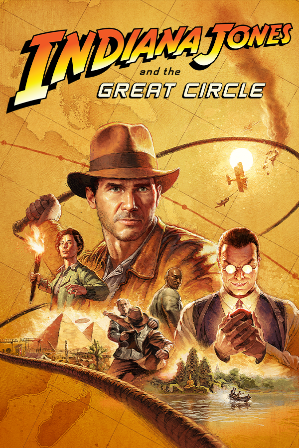

Indiana Jones and the Great Circle
Every archived year-end list appearance, including placement and points earned.
About the Game
Uncover one of history’s greatest mysteries in a first-person, single-player adventure. The year is 1937, sinister forces are scouring the globe for the secret to an ancient power connected to the Great Circle, and only one person can stop them - Indiana Jones™. Live the adventure as Indy in a thrilling story full of exploration, immersive action, and intriguing puzzles. As the brilliant archaeologist – famed for his keen intellect, cunning resourcefulness, and trademark humor – you will travel the world in a race against enemy forces to discover the secrets to one of the greatest mysteries of all time. Travel from the halls of Marshall College to the heart of the Vatican, the pyramids of Egypt, the sunken temples of Sukhothai, and beyond. When a break-in in the dead of night ends in a confrontation with a mysterious colossal man, you must set out to discover the world-shattering secret behind the theft of a seemingly unimportant artifact. Forging new alliances and facing familiar enemies, you’ll engage with intriguing characters, use guile and wits to solve ancient riddles, and survive intense set-pieces.
| Released | 2024-12-09 |
|---|---|
| Developer | Machine Games |
| Publisher | Bethesda Softworks |
| Genres | Action, Shooter, Adventure |
| Platforms | PC, PlayStation 5, Xbox Series S/X |
SingleplayerSteam AchievementsFull controller supportSteam CloudStory RichOpen WorldFirst-PersonExplorationStealthAction-AdventureCaptions available3D
Where to Buy
Game information provided by RAWG.
Points by Year
List History
| Year | Source | List | Placement | Points |
|---|---|---|---|---|
| 2025 | Deep Games | GOTY 2025: Os 25 Melhores Jogos do Ano | 5 | 5 |
| 2025 | GamesRadar+ | GamesRadar+ GOTY: The 25 Best Games of 2025 | 5 | 5 |
| 2025 | Polygon | The 50 best games of 2025, as chosen by Polygon | 4 | 5 |